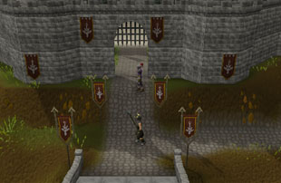
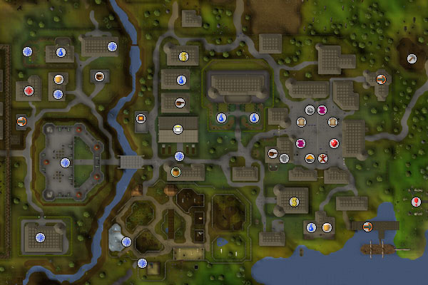
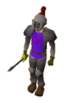
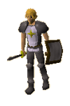

")
East Ardougne (Members)
Introduction | Location | Points of Interest | Personalities
Quests | Defenders of the City | Miscellaneous
Quests | Defenders of the City | Miscellaneous
Introduction

East Ardougne is without a doubt the nicer half of the city. It has docks, impressive mansions and even the Ardougne City Zoo. On top of this, it has a busy market and two banks. The Castle is also in East Ardougne, where King Lathas lives, while King Tyras has disappeared into the west.
Location

East Ardougne is difficult to miss travelling south to the Tree Gnome Village, Port Khazard or Yanille, and equally difficult to avoid if you are travelling north to the Seers' Village or the Tree Gnome Stronghold. The city itself, including West Ardougne, spans from the mountains in the west to the sea coast.
Points of Interest

East Ardougne is a large city, so it's no surprise that there is much to do there. Without even considering the shopping, there is the Castle - filled with paladins whose duty is to serve King Lathas - the farm just outside the north wall of the city, and, of course, the Ardougne City Zoo.
The zoo stocks a wide range of strange animals from foreign parts, from the camels of the Kharidian Desert, to a jogre and even a cyclops, whose origin is unknown. Also remember to keep an eye out for the penguins, who are comforted by ice shipped in to keep them cool.
The city's wealth is also available to unscrupulous adventurers, with pockets to be picked, stalls to be pillaged and chests to be sprung open. Also in the market is a Town Crier, who is more than happy to explain the Rules of Conduct and the role of Player Moderators.
North of the market is the Servants' Guild and, if you own a house and have a spare bedroom, you can visit them to supply you with a servant.
At the docks to the south-east of the city, Captain Barnaby will take travellers to Brimhaven, which gives access to TzHaar and Karamja.
Personalities

King Lathas is the ruler of East Ardougne, and with the size of the city combined with the troubles with King Tyras, he is not often in the mood for conversation. Sometimes, though, he has troubles that can only be solved by willing adventurers.
|

The city council takes some of the burden of the day-to-day running of the city from King Lathas, and Councillor Halgrive is one of the more proactive members of the council. He is a man quite prone to worrying, but it is this that has made him a successful politician.
|
|
| King Lathas can be found in his chamber on the first floor of the castle. | Councillor Halgrive can be found just south of the church. |
|
Doctor Orbon has spent a good deal of time in West Ardougne tending to the plague victims. He is meticulous with his equipment, and knows the value of cleanliness in medicine.
|

Lucien is the strange, black-robed character in the Flying Horse Inn. He is a bit mysterious, but usually has an errand for eager adventurers.
|
|
| Doctor Orbon can be found in the church. | Lucien can be found in the Flying Horse Inn north of the castle. |
|
The Carnillean family is one of the oldest noble houses of Ardougne, and he's not likely to let you forget it. He is quite indifferent towards his servants, and barely noticed when the last one died.
|

Edmond is a simple family man trying to live peacefully and without too much worry. His house is well-kept and his garden excellently watered.
|
|
| Sir Ceril Carnillean stays in his mansion in the south-west corner of East Ardougne. | Edmond can be found outside his house - usually in the garden - in the north-west of the city. |

Elena is Edmond's daughter, and cares more for the inhabitants of West Ardougne than Doctor Orbon. She often risks her health to sneak into the west to care for the sickly.
|

Wizard Cromperty is not only a wizard, but also an inventor. He enjoys spending his time tinkering with gadgets and spells, and trying to devise new ways to do things and new things to do. He is also capable of teleporting you to the Rune Essence mine, provided you have completed the Rune Mysteries quest.
|
|
| When she isn't tending to the sickly in West Ardougne, Elena can be found in her house north of the castle. | Wizard Cromperty can be found in his house in the north-east of the city. |

Larry is a truly devoted zoo keeper, and not in the slightest bit crazy. A little paranoid, perhaps, maybe a touch removed from the 'normal' world, but otherwise 100% guaranteed, certified sane. Honest. Penguins are absolutely the most dangerous foe RuneScape has ever faced, and far nastier than Zamorak. |
Geoff sits by the dartboard fletching arrows, which he tests by flinging at the board. He once tried to join the Ranging Guild, but failed his entry test due to an unfortunate and highly implausible accident involving a swallow, and ending up with an impaled squirrel. He's since taken in the squirrel, Sparky, and looks after him.
|
|
| Larry can be found next to the penguin enclosure at the Ardougne Zoo, keeping a close eye on his malicious charges. | Geoff can be found moping at one of the tables in the Poison Arrow pub, south of the marketplace. |

Marion the barmaid used to lead a group of merry bandits, but now she is content to stand behind the bar and polish her numerous archery trophies, in between serving drinks to thirsty travellers. She doesn't just live off past glories, though - she's come up with a recipe for a new ale called Ranger's Aid, which really hits the spot.
|

Sparky's leg has never been the same since Geoff accidentally injured him, but Geoff promised to look after him and has even given him a specially fletched arrow to use as a crutch, inscribed with "Get well soon". He's still managed to keep his demeanour perky, his outlook positive and his tail bushy.
|
|
| Marion can be found behind the bar of the Poison Arrow pub, south of the marketplace. | Sparky can be found hobbling/bounding around in the Poison Arrow pub, south of the marketplace. |
Quests
The following quests can be started in East Ardougne:
- Sheep Herder (Members)
- Temple of Ikov (Members)
- Hazeel Cult (Members)
- Plague City (Members)
- Biohazard (Members)
- Underground Pass (Members)
- Eagles' Peak (Members)
- Cold War (Members)
- Hunt for Red Raktuber (Members)
- Back to my Roots (Members)
Defenders of the City

It could be said that East Ardougne has no need of guards, given the number of other, more competent soldiers that roam the city, but the guard plays an important role in keeping crime down, leaving the knights and paladins to protect the city from invasion.
|

Warrior women are not terribly common around RuneScape, but in East Ardougne there is a small group that wander the city, like female versions of the Knights of Ardougne. |
|
| Guards can be found around the gates to the city and in the market. |

Handelmort Mansion is certainly the second most impressive building in the city after the castle. Lord Francis Kurt Handelmort trains only the most powerful dogs to guard his home, let thieves beware!
|

The Knights of Ardougne are a noble breed of man, well-trained and excellently equipped. In battle, they are easily a match for the White Knights of Falador, but it is unlikely that they will ever come to battle.
|
|
| Guard dogs can be found in the grounds of Handelmort Mansion. | Knights of Ardougne can be found throughout the city, but are most commonly in market. |
|

Paladins are, as they say, the cream of the crop. Few cities can boast such impressive warriors, and fewer still can claim their unflinching devotion. It is lucky for King Lathas that he can claim the service of his paladins.
|

As you would expect, there are few heroes in the world, and East Ardougne has a small number all to itself. These are among the finest human fighters you can expect to face, and will provide a challenge for all but the most powerful warriors. |
|
| Paladins can be found in large numbers in the castle. |
Miscellaneous
- For those new to the city, there is an Ardougne Guide Book in a house south-east of the church.
- As noted above, remember that you can catch a boat direct to Brimhaven at the docks.
- A cooking apple spawns in a farmhouse just north of the city.
- The switch in the house on the very west of East Ardougne takes you to the Wilderness. Be warned!
- There is a hammer and a chisel on a bench in Wizard Cromperty's house.
- There are pigeon cages behind Jericho's house just south of the north bank.
- Because East Ardougne Market is a haven for scurrilous thieves, you might find it interesting to examine the sign placed prominently in the centre of the square.
- The pub south of the marketplace has been recently reopened under new management as the Poison Arrow. It's making a bit of a name for itself thanks to the popularity of its Ranger's Aid ale and skewered kebabs.

More articles in
Cities and Towns
|
|